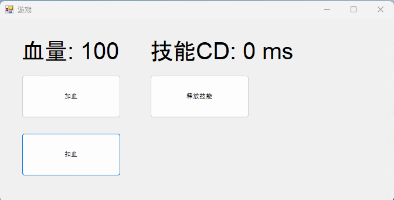
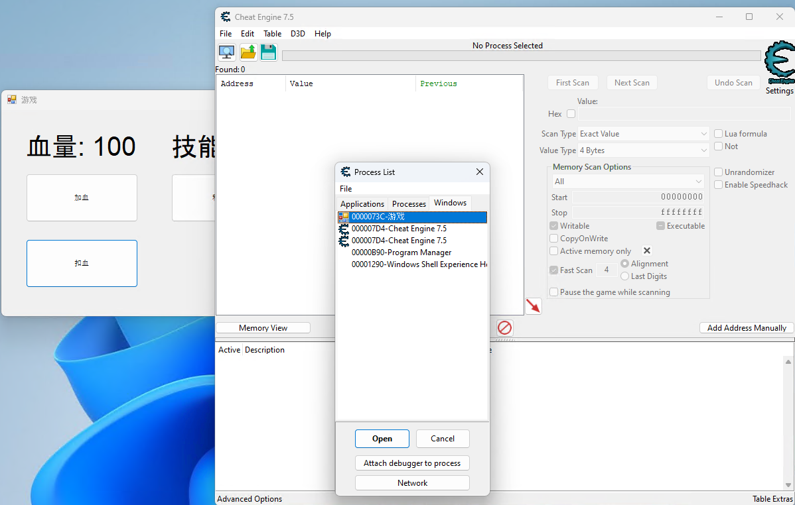
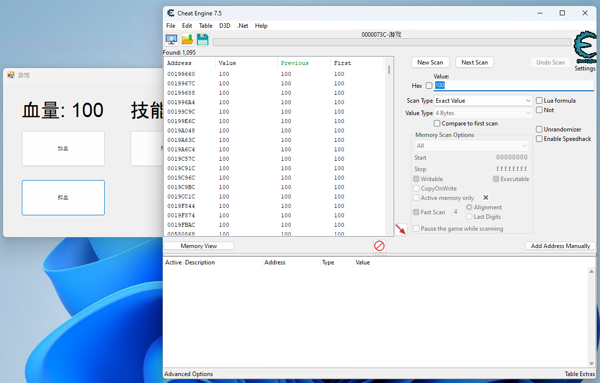
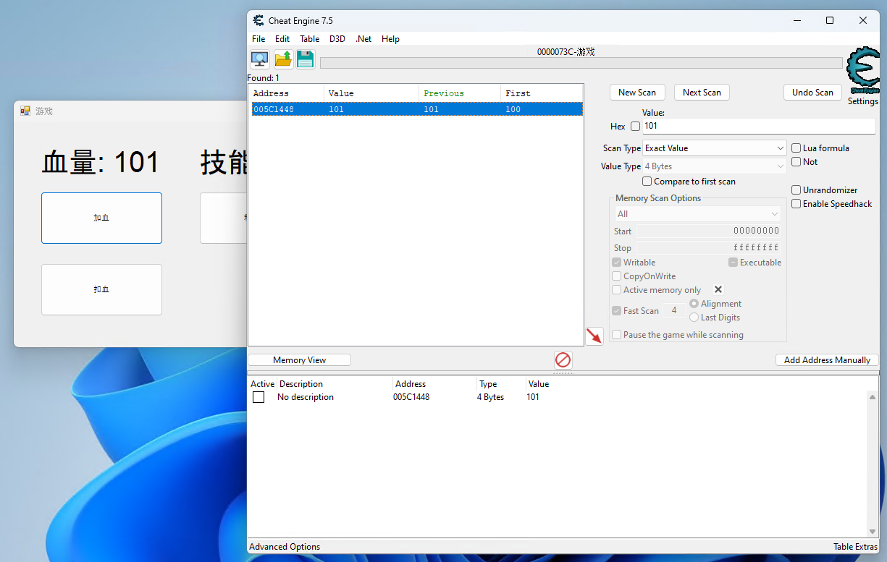
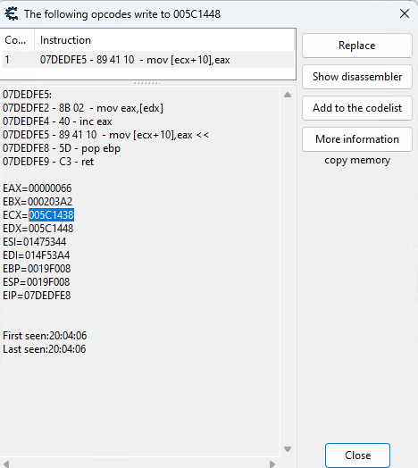
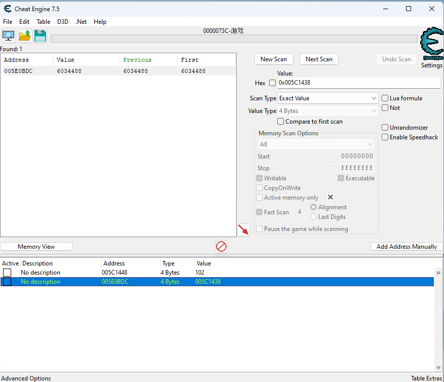
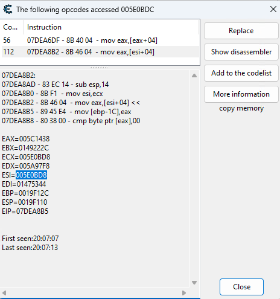
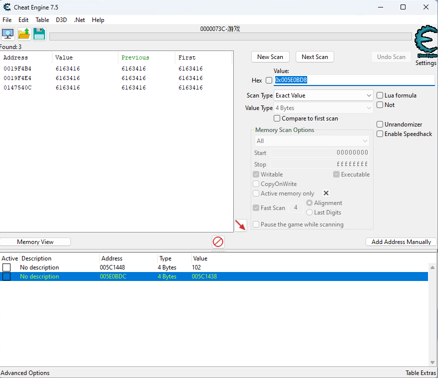
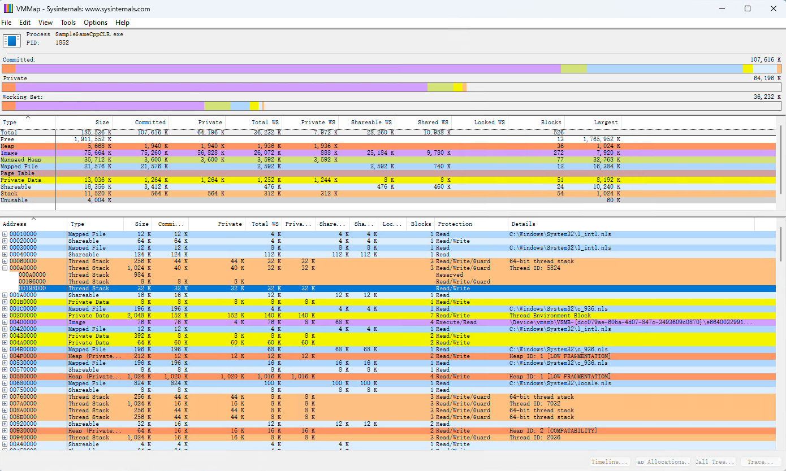
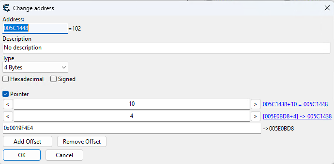

先说一下写一个外挂需要什么条件，想要写外挂至少需要掌握一门编程语言，主要负责写一些上层逻辑例如外挂界面，可以是易语言，但是单单会易语言是远远不够的。目前的外挂和主流PC游戏大部分底层逻辑都是用C/C++写的，拥有熟练的C/C++语言和Win32 API知识也是写外挂的基本条件。一般游戏都不可能有原代码的，必须靠反汇编或者跟踪的办法来探索其中的机理，所以具有很强的汇编基础也是必不可少的条件。如果你不具有上面的条件，还是先把基础打好，再来写外挂吧，一分耕耘，一分收获，天下没有白掉的馅饼的。
市面上常见的外挂主要有以下几种:模拟挂/脚本挂，加速挂，内存挂，封包挂。无论是哪种外挂都需要一些基本的技术实现例如取得窗口句柄，程序句柄。一般实现如下
-
窗口句柄
- 可以用
FindWindow找到窗口句柄
- 可以用
-
进程ID
- 可以通过
GetProcessId取得进程ID。 -
如果已经有窗口句柄的话可以用
GetWindowThreadProcessId取得窗口线程ID和进程ID
- 可以通过
-
进程句柄
-
如果是由外挂程序通过
CreateProcess启动游戏进程，返回值里就有进程句柄。 -
如果已经有进程ID的话可以通过
OpenProcess附加到游戏进程，返回值里有进程句柄。
-
如果是由外挂程序通过
模拟挂/脚本挂
模拟挂是以按键精灵为代表的一类，他本质上不进入游戏内部，只是在外围通过识别游戏图片、文字等方式来模拟点击，达到获益的目的。主要用处是将网络游戏中很繁琐的动作或者重复的无聊的很费玩家时间的流程和任务使用外挂帮助玩家完成，达到方便和解放玩家的目的。这类外挂对游戏破坏相对较小，但是也最常见，因为开发方便，小白学学也可以入手。举个例子，在RGP游戏中，你点鼠标砍了怪一下，那么在模拟挂的处理中，就是通过图形识别出怪的位置，用鼠标左键在怪身上模拟点击，从而使得人物跑到怪身边挥刀一砍。对游戏的影响主要是看游戏机制。比如重复刷资源，然后卖给其他玩家。但是对于不能自由交易的游戏，最多是导致玩家自己使用，从而可以24小时在线，提高练级速度。例如在网络游戏《地下城与勇士》中，角色存在等级制度，等级越高，可以带越好的装备，但是练级并不是一件美妙的事情，想要达到满级更是要花费很长的时间，在游戏满级前就要一直杀怪刷图，可能同一个图要刷几百遍。而刷图杀怪的过程就要一直按技能键和普攻键，比如普攻是 X 键，一天就要按几千上万遍，及其无聊和枯燥，所以外挂制作商开发出这种能够代替人们进行操作的外挂，可以利用其按键连点功能，来降低游戏的枯燥和痛苦，按一次就可以连续使用 X 键位，达到一直普攻的效果，在游戏人物进游戏后只需按一下 X 键，角色就可以一直攻击，玩家只需要控制角色的移动就可以了，让玩家远离这种无趣的连续点击键盘或者鼠标的操作。鉴于现在图像识别技术非常发达，基于此的例如自动瞄准外挂很难被游戏进程检测到。
按键挂一般分为前台按键和后台按键，其中前台按键是操作鼠标实现指针移动到指定位置进行点击，所以必须保持游戏窗口一直在前台，而后台按键则不然，向游戏窗口发送点击指令，从而实现窗口内部点击，那么这种模式，即时你窗口最小化也没有关系，更适合做窗口多开情况下的点击。后台按键的实现方式有这么几种
-
在RING 3层调用WIN32
API实现，例如用
WM_LBUTTONDOWN发送鼠标左点击的窗口消息 - 在RING 0层通过驱动模拟鼠标键盘输入，按键精灵就是采用这种模式。
加速挂
可以修改某一个进程的时间流逝速度，例如可以让游戏客户端进程的时间加速N倍。真实时间可能只过了1s，而客户端进程的时间已经过了Ns。通过加速齿轮，可以让人物移动速度加快、技能cd加速等。
- 常见工具：变速齿轮
内存挂
这类外挂通过分析游戏所使用的内存，找到内存中的变量去分析猜测变量是代表的什么含义，然后修改客户端的内存信息。由于客户端本身保存着很多游戏信息，比如技能CD、移动速度等，若外挂能把技能CD改为了0，客户端就可以无限放此技能。内存不单单保存了值还有代码，更高级，更复杂的使用是分析内存内的代码，修改代码段或者直接调用游戏函数传入非法参数修改游戏功能。下面是一些例子：
- 以使命召唤OL卡配件为例。游戏的设定为武器可以装配不同的配件，正常情况下，M4A1只能装配2个配件。使用调试器调试游戏，分析武器的配件逻辑，可以发现：每次装备配件时，都会调用一个游戏函数，定义为AddWeaponAttachment(作者自己的定义，下同)，而这个函数的调用参数通过不断的调试分析可以猜测为插槽Index以及配件ID，即：AddWeaponAttachment(SlotIndex, AttachmentID)。额外调用这个函数，即增加一次游戏逻辑的调用，就可以实现M4A1使用多个配件。
- 以DNF倍攻为例。玩家在攻击的时候会有攻击力的叠加。同样通过调试分析，找到角色攻击函数，定义为Attack(Target, Power)，参数表示攻击的对象以及攻击力，外挂可以修改这个Attack函数，使得Target为当前区域内所有怪物，Power为无穷大，那么Attack的效果即为全屏倍攻。
- 以CF透视为例。游戏在渲染图像的时候会使用Windows的DiretX模块（DX游戏）。一般来说，在渲染每一帧的时候游戏逻辑会根据由远到近的顺序将当前屏幕内所展示的图像渲染出来，在最终呈现时会根据物体的遮挡关系真实的反映出当前场景，最终觉得当前所看到的画面。外挂可以修改DirectX的渲染逻辑，强制将遮挡关系修改，那么原本应该被遮挡的物体会在屏幕上显示出来，形成人物透视。
- 以棋牌类游戏看牌挂为例。由于游戏逻辑的需要，玩家的底牌会在存放在内存中，而通过内存查看工具不断的变更查看条件，就可以在内存中的找到对应的底牌记录，知道别人的底牌之后，玩法就非常随意了。
想要修改内存值我们需要定位游戏数值对应的内存位置，也就是常听到的找基址和偏移。如果是找CALL的话，也就是找到某个游戏功能函数的地址，之后还要区分是否为无参函数还是有参函数，假如是有参函数，怎么计算参数对应的值，怎么维持堆栈平衡，以便我们之后调用它。外挂开发者使用动态反编译工具OllyICE、内存修改器等诸多调试工具，对游戏的主程序以及载入的DLL进行动态追踪调试，辅助配合静态反汇编工具IDA Pro，找基址、找函数地址。例如在RGP游戏中，要实现打怪这个功能，就首先要找怪物在内存中的数据，例如怪物的编号、怪物的坐标、怪物的血条等等数值，然后通过OD调试出打怪这个功能CALL所在的代码段，当然都是反汇编的ASM代码，找到以后，通过代码注入器进行测试，看是否正常，如果对的，那就记录下来。为了避免每次游戏更新都要重新找基址或函数地址，可以学会找特征码然后做个免更新的外挂快速找到基址和游戏功能对应的函数地址。
当我们分析完内存，接下来就可以写外挂修改内存值或者调用各个不同的CALL。具体的操作流程是，先取得进程线程句柄，就可以用下面几种方法修改进程的内存数据了，可以是具体的值也可以是代码，使程序按照我们的意愿来执行。
修改内存的方式有以下几种:
- 是利用 virtual X driver（虚拟设备驱动程序）直接查找游戏内存分配地址，这种方法需外挂开发人员有良好的编程基础和系统的底层驱动知识，是技术较难的一种方法，门槛较高。
-
用Tool Help
API函数，该函数是用来枚举进程和模块，获取进程和模块的 ID
与信息。黑客利用
Toolhelp32ReadProcessMemory函数从网络游戏的进程中读取到游戏的内存数据，但是该方法没有修改内存的函数，不能往内存里写数据，所以这种方法需要其他方法的配合，具有一定的弊端。 -
利用游戏进程的对应函数，这种方法比前两种要方便和简单很多，游戏进程的对应函数很容易就能得到，例如利用：
ReadProcessMemory和WriteProcessMemory两个函数对游戏进程进行读取和写入，这种方法是当下最流行最受欢迎的方法，该方法能修改市面上大多数的游戏内存。
内存挂开发示例
第一步我们需要找游戏内存地址，偏移地址，这可能是整个游戏外挂开发中最难的一步，因为一个大型的网络游戏，可能一个技能或者血条的内存基址可能会偏移很多次，最后才得到一个内存地址。那么，这里有个问题来了，我们为什么要找技能或者血条的内存基址和偏移呢？不能直接修改找到的内存地址就行了吗？这样是不行的，因为在堆上面分配的数据地址是会变动的。举个例子，每次游戏重新启动以后，游戏主体会重新分配堆的地址。所以大部分游戏数据在内存中的存放位置是会变的，尤其是那些带垃圾回收的语言在游戏运行中都会自动修改数据的内存地址。只有全局变量或者少部分栈上的地址又被我们称为基址是不会变动。内存寻址有很多种方式这里就不具体介绍了。我们要做的就是找到数据基址以及数据地址与数据基址的联系，只有这样才能够确保每次登陆游戏都能够修改到正确的内存地址的值。
这里用一个很简陋的程序代替游戏来方便我们解释。

接下来我们使用一款内存修改编辑工具Cheat Engine，简称CE修改器。打开CE，在CE中找到游戏进程，附加到CE中去，如图所示。

CE附加到游戏进程后，看自己想修改什么的内容，就去找对应的内存基址，怎么找呢？首先，看一下最开始的数值是多少？比如这里，开局是100，就在CE中数值一项输入100，扫描类型选择精确数值，因为是32位程序在数值类型选择4字节，然后点击首次搜索。

一般来说第一次搜索会出来很多地址，究竟哪一个是我们想要的呢？接下来就需要在游戏中改动一下数值，然后点击再次搜索，重复这个操作，直到只剩下一个结果。

我们想要的内存地址就出来了，把这个地址0x005C1448添加到地址列表中去，然后修改一下值，确认一下是不是想要的地址，不过这里要注意，在修改的时候，我们需要点击列表地址中我们拉下来的这一行的数值这一栏，其他是修改地址和字节类型用的，不要乱动。那接下来要怎么样找到基址和偏移地址？我们找到这个地址以后，就右键，选择找出是什么改写了这个地址，这里就会弹出一个窗口，是空白，然后我们再到游戏中通过某种方法改变数值，看看这个空白窗口中出现的代码。

从这里我们可以看出我们之前找到的内存地址和其他内存地址的联系。
0x005C1448 = ECX+0x10
ECX = 0x005C1438
搜索0x005C1438看看哪个内存地址保存了这个地址的引用。尽管可能答案不是唯一的，多过滤几遍。

我们现在得知血量的地址是[0x005E0BDC]+0x10，接下来查看谁访问的这个地址0x005E0BDC

现在我们得知0x005E0BDC=0x005E0BD8+0x4所以0x005C1448=[0x005E0BD8+0x4]+0x10
继续重复之前的操作必要的时候用断点配合直到找到不随程序运行而改变的地址，最好是绿色的地址。搜索0x005E0BD8

根据VMMAP
0x0019开头的地址是栈上的地址,极有可能是同一个参数一层一层的传到里面需要的函数。选择最高的地址0x0019F4E4就相当于选择了最外层的函数局部变量，而且看地址可能是启动函数附近，所以我们可以认为这个地址是静态的。

现在我们知道想要修改血量我们只需要修改这个地址[[0x0019F4E4]+0x4]+0x10。在CE里添加一个指针

关闭游戏然后重启然后CE重新附加到游戏进程上，我们可以看到血量能被之前找到的指针正确的显示出来。

封包挂
此类外挂可以截获客户端发送给服务器的消息，然后进行篡改或者重发。比如可以截获一个释放技能消息，然后再无限重发给服务器，服务器若没有验证，就会无限执行技能。调试方式很多种，外挂制作者可以用封包截取编辑软件例如WPE三件套:
Easy2Game Pro，CCProxy，Winsock Packet Editor
(WPE)，也可以继续用OD来断点send，拿到封包数据。拿砍怪来说，游戏再调用了砍怪CALL之后，他最终必须经过send方法，将结果发给服务器，而这个结果才是重中之重，封包就是分析这的。经过多次截取封包，分析数据，修改数据，再转发给服务器验证想法，可以猜测得到封包数据对应的人物操作或属性。一旦破解了封包的数据结构，外挂开发者可以利用封包截获工具重复发送自定义数据包例如战斗结束加经验的数据包。之后还可以编写自动化程序自动创建自定义数据包或者拦截修改对应的数据包，通过篡改通信数据来实现作弊。如果能实现一整套通讯流程就可以模拟客户端脱机运行外挂程序而不再需要依赖游戏本体，自己写程序跟服务器连接发送封包，从登陆到打怪的一系列封包，不仅速度快，而且可以多开N多个窗口，因为不需要游戏渲染，只是纯字节的收发。
钩子和注入
钩子又或者Hook技术代指对游戏进程或者游戏进程调用的系统或者第三方库的代码或者内存数据进行修改。一般外挂都会将主文件封装成DLL，然后用一切办法让游戏启动的时候加载起来，这样，外挂就变成了游戏的一部分，都是内部调用，一般体现形式是游戏一启动以后，会多出一个外挂窗口，可以设置修改各种参数。另一种方法是inline
hook，通过修改内存或者二进制文件将一段代码插入并改变控制流的技术。实际上，这是通过将函数的前几条指令替换为指向我们插入的代码（通常是另一个函数）的jump指令来实现的，完成后将跳转回，继续执行原始函数。Bypass各种游戏保护机制，内核保护机制基本上靠都是HOOK机制，从应用层到内核层的HOOK。
反外挂手段和反“反外挂”手段
游戏开发者一般不会对所有可能的情况增加防外挂逻辑，只要能保证外挂使用者只能通过非常麻烦复杂的工作才获得一些小小收益，那么这种情况可以放过，也就是说保证使用外挂的成本高于支出。
检测外挂的方法
验证码
一些回合制游戏会时不时弹出一些验证码，主要是用来干扰模拟外挂，假如指定时间内没有应答就强制退出账号。这个方法用处一般不能搞定。不复杂的验证码只需要简单的OCR就行。
特征码识别
跟杀毒软件原理一样，扫描硬盘关键目录，例如游戏本体目录，检测是否有文件符合特征码黑名单。还可以把识别到的外挂程序上传到杀毒软件的识别库，这样子用户运行的时候就会收到警告有些会打退堂鼓。解决办法就是免杀技术。
虚拟机检测
回合制游戏一般会防止用户在同一台机子上多开，但是有些用户会用虚拟机，所以会检查是否环境为虚拟机，主要是靠查看虚拟机特有的函数，软件，或者硬件来判断。
进程检测
游戏在初始化时或者周期性检测正在执行的进程，若发现某个进程在黑名单上，则不能进入游戏或退出游戏。这种方式可以预防市面上常见的外挂，对于不常见的或者新开发的外挂则束手无策。想要逃避黑名单检测也是有办法的，例如随机生成进程名称，隐藏进程名称，周期性修改进程名称，伪装进程名称为某系统进程名。
变量检测
设置一个变量。在游戏关键功能函数的外层函数赋值，在功能函数内部检测。正常游戏调用肯定是一步一步执行的，必然会对变量赋值，但是游戏外挂会直接调用功能函数，函数内部发现变量没有被赋值，而检测到外挂。
堆栈检测
游戏功能函数内部读取堆栈信息，以此得到调用函数的代码来源，如果发现并非正常代码调用的堆栈，那就是外挂程序了。
代码检测
代码检测主要是保护游戏代码不被外挂程序篡改，游戏中有一些关键逻辑代码，比如如果血量为0的话会判断人物死亡，外挂课程可以恶意篡改判断逻辑，让程序无论怎样都不会执行死亡代码，从而实现无敌效果。代码检测的原理是，对包括磁盘代码及在载入的内存代码做校验，防止代码被非法更改。建立一个新的反外挂线程来不断的读取关键代码的值，校验代码段。用CRC之类算法对代码的完整效验，Hook函数的完整效验，以此查看代码是否被篡改。加入敌意进程或模块的特征检测，一些重要代码段和关键的API另外单独校验，必要的话依赖服务器验证，检测到非法可以对服务器进行报告，并在客户端主动切断与游戏服务器的连接。在一些重要代码段例如加密解密函数里加入对反外挂线程的检测，检测反外挂线程是否正常运行，如果检测到非法情况，同样对服务器进行报告并主动切断与游戏服务器的连接。
时间同步
加速器外挂的原理是加快的客户端的时间流逝，因此，最简单的方式是当服务端收到同步消息时，从同步消息中拿出来客户端发送消息的时间，若客户端发送时间大于服务端当前时间（会加一个阈值），则认为是使用外挂。由于网络延迟和网络波动问题，可能出现客户端时间快于服务器时间。为了避免造成误判，可以使用一个较大的阈值，因为加速器会导致客户端时间和服务器的差距越来越大。
心跳包
客户端定时向服务端发送心跳包，以便服务端检测客户端是否掉线，可以利用心跳包来判断玩家是否使用加速器。加速器会改变全局时间，因此其也会改变心跳包的发送频率，从而露出马脚。如果前后相同msg的发送间隙小于合理范围就判定为作弊。
行为统计分析
把玩家的行为记录下来并进行分析。例如玩家收益产出是否大于设定好的的一个值，通常代表一个正常玩家高负荷游戏所能达到的最高收益。原神就是这样子检测异常账号的。或者利用深度学习人工智能大数据对玩家的行为数据进行分析。比如一局游戏中一位玩家爆头和击杀率都特别的高，鼠标移动的轨迹几乎为直线，那么就可以把这些数据异常的玩家抽调出来转入人工检测，或者极为异常的直接封号处理。
帧同步投票
服务端可以通过投票机制找出作弊的玩家。服务端可以要求每个客户端每隔一定的帧数就发送一次状态协议，协议中包含客户端当前的帧数及状态码。如果没有作弊，那么在同一帧时，各客户端应处于同样的状态，状态码也应相同。服务端需要收集所有客户端的状态码，如果某个客户端的状态码不一样，则该客户端的玩家很有可能是在作弊（也有可能是游戏本身的Bug造成的）。没有想到合适的反制法，只能尽量避免去修改可能会被服务端校验的数据。
举报
moba游戏或者fps这种对抗性的游戏中，玩家使用外挂对手能明显感知到。对于这种游戏，举报机制是一个很有用的防外挂手段。
概率封号
当检测到客户端触碰到某规则不要急着封号，而是有概率封号，还要随机延迟一段时间封号，这样黑客更难发现检测逻辑。
防篡改思路
内存加密
关键数据不落内存，一律使用getxx，setxx之类的接口，后面将真实数据经过变换以后才落内存。基于内存数据经常需要修改，加密过程一般不会太复杂，常见的是:
- 倍值加密算法，y = n * x + m。其中x为加密前的数值，y为内存中的数值，n为任意正负整数，m为任意正负整数。y = (x << n) + m也属于这种算法，。
- 异或加密算法，y = n ^ x + m。其中x为加密前的数值，y为内存中的数值，n为任意正负整数，m为任意正负整数。
通信数据加密
网络游戏的前期由于其服务器功能的限制，一般封包都不加密或者采用异或加密很好破解。外挂开发者非常容易就能对网络数据包进行分析和修改，若我们对客户端通信信息进行更复杂的加密，那么拿到了信息也不能很容易得进行分析和篡改。但也不是完全没办法。若封包加密则分析其加密解密算法，因为客户端某个时间段肯定要对发送的原文进行加密。只要逆向找到对应的加密解密函数就可以:
- 调用客户端的解密函数分析数据
- 调用客户端的加密函数加密任意数据。
服务器数据合法性校验
对客户端的数据要在服务器端对消息的合法性进行校验，如果检测到非法输入的情况可以对其封号处理。非法输入场景可以是：购买非法：例如购买道具时传入负数，将本应该扣除的游戏币变成了增加游戏币。一般情况下，当涉及通过客户端传入参数来进行加减扣除操作时，都需要进行参数范围等合法性校验；CD冷却无效：在一些帧同步操作中，客户端通过某些手段可以绕过CD时间，比如连续触发某NB技能，这个时候需要在服务器校验前后两次操作的CD时间是否合法。
服务器数据完整性校验
对于截取和修改网络数据包，进而向服务端发送任意数据。可以给通信消息添加一个消息认证码保证消息完整性。
反调试
主流思想是驱动层进行调试器进程检测、标志位检测，HOOK重要函数等方法干扰调试过程。可以采用底层钩子技术，一般采用SSDT HOOK来对游戏进程进行保护。但这种技术有一个致命的缺陷，就是兼容性问题。但是反调试代码加多后也会导致兼容性稳定性出现问题。
加壳
给游戏执行文件或者需要的DLL猛加壳提高调试和注入难度。加壳或者说虚拟机保护是指将一系列的指令解释成bytecode(字节码)放在一个解释引擎中执行，能有效的干扰非法调试者对保护的代码进行分析。通过查壳软件可以检测到常见的壳且这些壳一般都有对应的脱壳软件。
程序签名
防止篡改二进制。
脚本化
重要代码放虚拟机或者脚本里运行（脚本字节码需需改），一般黑客主要分析反汇编，脚本的动态运行逻辑也会让内存数据的寻址变得更困难。
减少本地决策权
决定性逻辑永远放在服务端。
外挂开发的市场化
国内的外挂开发环境基本是有人把外挂功能写成易语言模块，然后下游开发者（技术有限的人）调用模块的功能套个皮卖。内存地址也是可以交易的，在有些QQ群里可以去买。内存数据甚至是可以分开来卖的，例如花500块买个血量基址，200买个背包数据之类的。内存数据之间并无太大的强关联性，所以可以分开买。封包数据的解析也是可以交易的，只不过一般来说会更贵，因为涉及到一系列的加密解密，组包方式，解包方式等。
参考
- 游戏开发中是如何做防外挂的?
- 常用游戏反外挂技术总结
- 浅谈外挂常识和如何防御
- 外挂和封包有怎样的区别?
- 简单聊聊为什么封包比内存贵那么多
- 一般游戏的反外挂保护方案
- 我这些年对游戏外挂辅助开发的一些心得和体会
- Win32 API
- 游戏外挂制作原理
- 游戏安全系列教程之水果忍者
- 游戏安全系列教程-植物大战僵尸（一）
- 游戏安全系列教程-植物大战僵尸（二）
- 外挂设计与分析
- 如何打造一款游戏外挂
- “变速齿轮”研究手记
- “变速齿轮”再研究
- [原创]封包式游戏功能的原理与实现
- [原创]揭秘游戏外挂开发技术（一）
- CE+OD数据挖掘入门
- Delphi深度之旅——网络游戏外挂制作
- 游戏外挂基本原理及实现[转贴]
- 游戏外挂教程（转）
- 游戏外挂制作原理
- [C&C++ 转载] 游戏外挂辅助制作方法原理
- 如何制作外挂